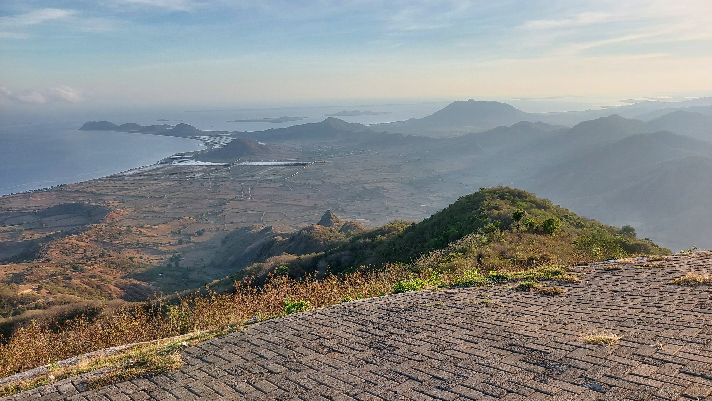

Desa Mantar adalah salah satu Destinasi unggulan Kabupaten Sumbawa Barat. hingga saat ini, Desa Mantar sudah dikunjungi berbagai kalangan, dan tidak heran jika Desa Mantar dapat dikatakan saat ini sudah mendunia. Para wisatawan yang berdatangan ke kabupaten Sumbawa Barat dengan maksud melaksanakan pekerjaan atau pun yang datang khusus ke Kabupten Sumbawa Barat, tidak lengkap rasanya jika belum datang berkunjung ke Desa mantar.

Beberapa atlet paralayang KSB melakukan latihan rutin menerbangkan paralayang di Bukit Mantar Desa Mantar, Kecamatan Poto Tano Kabupaten Sumbawa Barat, Sabtu (5/5). Lihat selengkapnya..
Bulu mata pirang yang lebat dan mata biru yang sangat indah milik Muhammad tak kan pernah saya lupakan. Sorot matanya malu, genggaman tangannya yang lemah,kepalanya kadang tertunduk saat sorot kamera blitz saya membuat silau kornea matanya. Lihat selengkapnya..
Amek,Umbe dan Acan tiga bocah bersahabat karib yang hidup dalam kondisi serba kekurangan disebuah perbukitan di Desa Mantar,Kecamatan Poto Tano, Kabupaten Sumbawa Barat NTB.